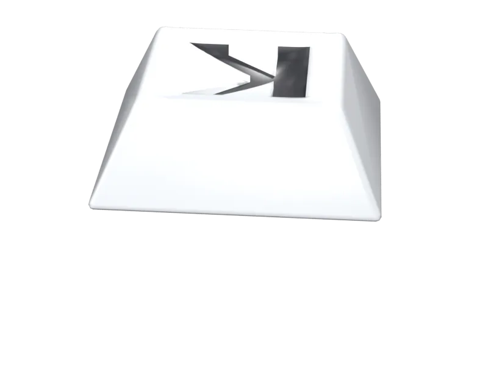
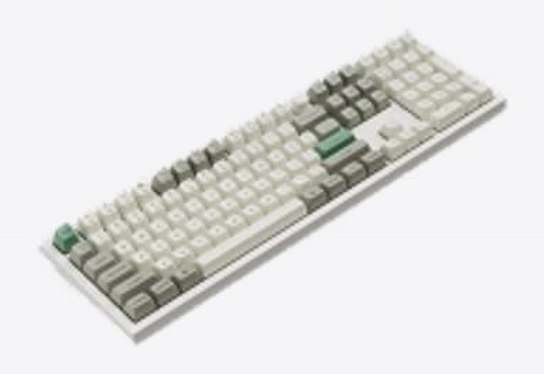
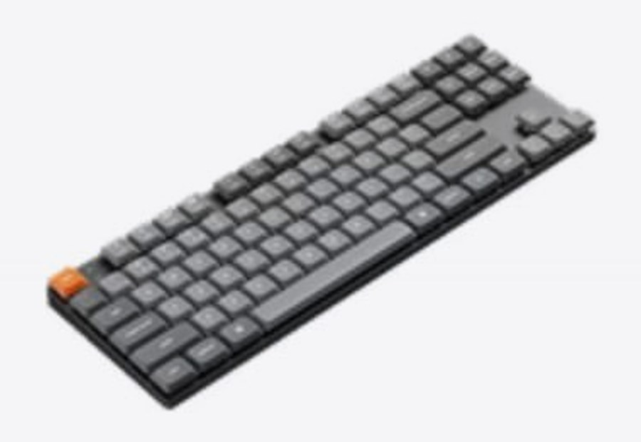
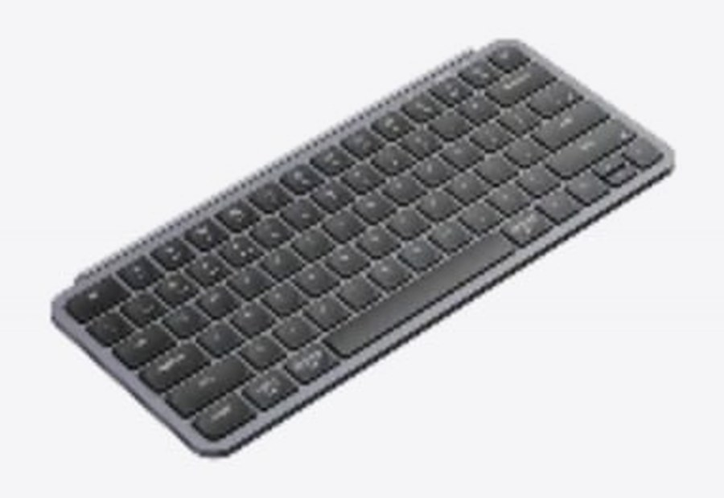
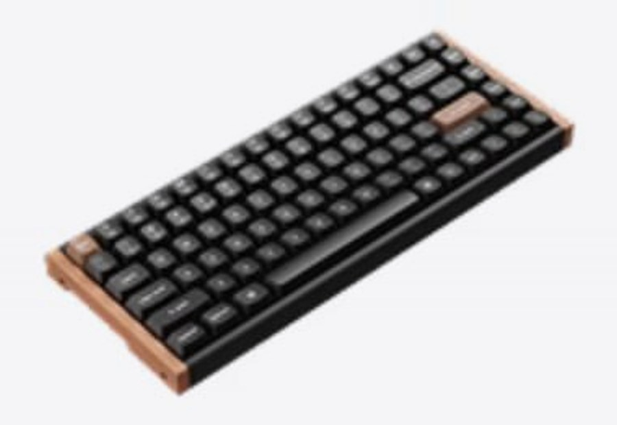

Pick the right keyboard
Five switch types, explained plainly. Find the one that fits the way you type.

Five switch types, explained plainly. Find the one that fits the way you type.

Every keyboard is one key, repeated.Keep scrolling
What changes is what sits under the keycap.The switch is the difference
Five mechanisms, five different feels.Pick the one that suits you
Scroll
Every keyboard below does the same job. What changes is what happens under the keycap.
A separate switch under every key, with a tactile or audible point you can feel.
Details ›
Standard-height switches and keycaps. The familiar desktop feel.
Details ›
Shorter switches and keycaps, for a slimmer body and shorter travel.
Details ›
Two crossing plastic arms under each key. Short travel, quiet, common on laptops.
Details ›
No contact inside. A magnet moves and a sensor reads exactly how far down the key is.
Details ›